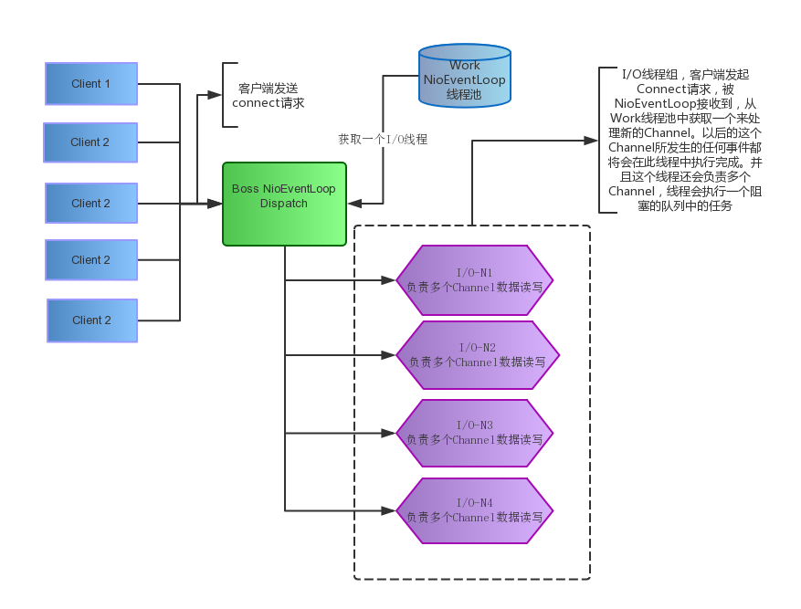

<!DOCTYPE html>
<html>
<head><meta name="generator" content="Hexo 3.9.0">
  <meta charset="utf-8">
  
  <title>Netty-4.1.4源码分析一 | 东写西读</title>
  <meta name="viewport" content="width=device-width, initial-scale=1, maximum-scale=1">
  <meta name="description" content="Netty是什么 Netty是一个异步的事件驱动的网络应用程序框架用于快速开发可维护的高性能协议服务器和客户端。基于NIO客户端服务器框架，可以快速，轻松地开发网络应用程序，如协议服务器和客户端。 它大大简化和简化了网络编程，如TCP和UDP套接字服务器。">
<meta property="og:type" content="article">
<meta property="og:title" content="Netty-4.1.4源码分析一">
<meta property="og:url" content="http://yanwuyang.github.io/2016/12/23/Netty-4.1.4源码分析一/index.html">
<meta property="og:site_name" content="东写西读">
<meta property="og:description" content="Netty是什么 Netty是一个异步的事件驱动的网络应用程序框架用于快速开发可维护的高性能协议服务器和客户端。基于NIO客户端服务器框架，可以快速，轻松地开发网络应用程序，如协议服务器和客户端。 它大大简化和简化了网络编程，如TCP和UDP套接字服务器。">
<meta property="og:locale" content="zh-CN">
<meta property="og:image" content="http://yanwuyang.github.io/2016/12/23/Netty-4.1.4源码分析一/components.png">
<meta property="og:image" content="http://yanwuyang.github.io/2016/12/23/Netty-4.1.4源码分析一/threadmodel.png">
<meta property="og:updated_time" content="2021-06-25T02:00:18.079Z">
<meta name="twitter:card" content="summary">
<meta name="twitter:title" content="Netty-4.1.4源码分析一">
<meta name="twitter:description" content="Netty是什么 Netty是一个异步的事件驱动的网络应用程序框架用于快速开发可维护的高性能协议服务器和客户端。基于NIO客户端服务器框架，可以快速，轻松地开发网络应用程序，如协议服务器和客户端。 它大大简化和简化了网络编程，如TCP和UDP套接字服务器。">
<meta name="twitter:image" content="http://yanwuyang.github.io/2016/12/23/Netty-4.1.4源码分析一/components.png">
  
  
    <link rel="icon" href="/favicon.ico">
  
  
    <link href="/css/css.css" rel="stylesheet" type="text/css">
  
  <link rel="stylesheet" href="/css/style.css">
  

</head>
</html>
<body>
  <div id="container">
    <div id="wrap">
      <header id="header">
  <div id="banner"></div>
  <div id="header-outer" class="outer">
    <div id="header-title" class="inner">
      <h1 id="logo-wrap">
        <a href="/" id="logo">东写西读</a>
      </h1>
      
        <h2 id="subtitle-wrap">
          <a href="/" id="subtitle">实践是最好的成长，发表是最好的记忆</a>
        </h2>
      
    </div>
    <div id="header-inner" class="inner">
      <nav id="main-nav">
        <a id="main-nav-toggle" class="nav-icon"></a>
        
          <a class="main-nav-link" href="/">首页</a>
        
          <a class="main-nav-link" href="/archives">文章</a>
        
          <a class="main-nav-link" href="/about">关于</a>
        
      </nav>
      <nav id="sub-nav">
        
        <a id="nav-search-btn" class="nav-icon" title="搜索"></a>
      </nav>
      <div id="search-form-wrap">
	    
           <form action="//google.com/search" method="get" accept-charset="UTF-8" class="search-form"><input type="search" name="q" class="search-form-input" placeholder="Search"><button type="submit" class="search-form-submit">&#xF002;</button><input type="hidden" name="sitesearch" value="http://yanwuyang.github.io"></form>
	    
      </div>
    </div>
  </div>
</header>
      <div class="outer">
        <section id="main"><article id="post-Netty-4.1.4源码分析一" class="article article-type-post" itemscope itemprop="blogPost">
  <div class="article-meta">
    <a href="/2016/12/23/Netty-4.1.4源码分析一/" class="article-date">
  <time datetime="2016-12-22T16:00:00.000Z" itemprop="datePublished">2016-12-23</time>
</a>
    
  <div class="article-category">
    <a class="article-category-link" href="/categories/Java/">Java</a>
  </div>

  </div>
  <div class="article-inner">
    
    
      <header class="article-header">
        
  
    <h1 class="article-title" itemprop="name">
      Netty-4.1.4源码分析一
    </h1>
  

      </header>
    
    <div class="article-entry" itemprop="articleBody">
      
		<!-- Table of Contents -->
		
		<div id="toc" class="toc-article">
		<strong class="toc-title">文章目录</strong>
		<ol class="toc"><li class="toc-item toc-level-2"><a class="toc-link" href="#Netty是什么"><span class="toc-number">1.</span> <span class="toc-text">Netty是什么</span></a><ol class="toc-child"><li class="toc-item toc-level-3"><a class="toc-link" href="#特点"><span class="toc-number">1.1.</span> <span class="toc-text">特点</span></a></li><li class="toc-item toc-level-3"><a class="toc-link" href="#线程模型"><span class="toc-number">1.2.</span> <span class="toc-text">线程模型</span></a></li></ol></li><li class="toc-item toc-level-2"><a class="toc-link" href="#实例分析"><span class="toc-number">2.</span> <span class="toc-text">实例分析</span></a></li><li class="toc-item toc-level-2"><a class="toc-link" href="#源码分析"><span class="toc-number">3.</span> <span class="toc-text">源码分析</span></a></li></ol>
		</div>
		
        <h2 id="Netty是什么"><a href="#Netty是什么" class="headerlink" title="Netty是什么"></a>Netty是什么</h2><ul>
<li>Netty是一个异步的事件驱动的网络应用程序框架用于快速开发可维护的高性能协议服务器和客户端。基于NIO客户端服务器框架，可以快速，轻松地开发网络应用程序，如协议服务器和客户端。 它大大简化和简化了网络编程，如TCP和UDP套接字服务器。<a id="more"></a>
<h3 id="特点"><a href="#特点" class="headerlink" title="特点"></a>特点</h3></li>
<li>1、设计<ul>
<li>1、针对各种传输类型的统一API - 阻止和非阻塞套接字</li>
<li>2、基于灵活和可扩展的事件模型，允许清楚地分离关注点</li>
<li>3、高度可定制的线程模型 - 单线程，一个或多个线程池，如SEDA</li>
<li>4、真正的无连接数据报插座支持（自3.1版本）</li>
</ul>
</li>
<li>2、使用简单<ul>
<li>1、完善的文档</li>
<li>2、独立不依赖其他环境包JDK1.5以上就足够了</li>
</ul>
</li>
<li>3、性能<ul>
<li>1、更好的吞吐量，更低的延迟</li>
<li>2、减少资源消耗</li>
<li>3、最小化不必要的内存复制</li>
</ul>
</li>
<li>4、安全<ul>
<li>1、支持SSL / TLS和StartTLS</li>
</ul>
</li>
<li>5、社区<ul>
<li>1、社区活跃。</li>
</ul>
</li>
</ul>
<p>上面已经对Netty有了个大概的了解了下面我们就将具体分析Netty的一个内部运行机制、以及线程模型和内存零拷贝。今天主要是分析Netty的源码对于还不会使用Netty的同学请点击查看<a href="http://netty.io/wiki/user-guide-for-4.x.html" target="_blank" rel="noopener">Netty官方文档</a>。</p>
<h3 id="线程模型"><a href="#线程模型" class="headerlink" title="线程模型"></a>线程模型</h3><p></p>
<h2 id="实例分析"><a href="#实例分析" class="headerlink" title="实例分析"></a>实例分析</h2><ul>
<li><figure class="highlight java"><table><tr><td class="gutter"><pre><span class="line">1</span><br><span class="line">2</span><br><span class="line">3</span><br><span class="line">4</span><br><span class="line">5</span><br><span class="line">6</span><br><span class="line">7</span><br><span class="line">8</span><br><span class="line">9</span><br><span class="line">10</span><br><span class="line">11</span><br><span class="line">12</span><br><span class="line">13</span><br><span class="line">14</span><br><span class="line">15</span><br><span class="line">16</span><br><span class="line">17</span><br><span class="line">18</span><br><span class="line">19</span><br><span class="line">20</span><br><span class="line">21</span><br><span class="line">22</span><br><span class="line">23</span><br><span class="line">24</span><br><span class="line">25</span><br><span class="line">26</span><br><span class="line">27</span><br><span class="line">28</span><br><span class="line">29</span><br><span class="line">30</span><br></pre></td><td class="code"><pre><span class="line"><span class="keyword">public</span> <span class="class"><span class="keyword">class</span> <span class="title">NettyServer</span></span>&#123;</span><br><span class="line">    <span class="function"><span class="keyword">public</span> <span class="keyword">static</span> <span class="keyword">void</span> <span class="title">main</span><span class="params">(String[] args)</span> <span class="keyword">throws</span> Exception </span>&#123;</span><br><span class="line">        EventLoopGroup bossGroup = <span class="keyword">new</span> NioEventLoopGroup(); <span class="comment">// (1)</span></span><br><span class="line">        EventLoopGroup workerGroup = <span class="keyword">new</span> NioEventLoopGroup();<span class="comment">// (2)</span></span><br><span class="line">		</span><br><span class="line">        <span class="keyword">try</span> &#123;</span><br><span class="line">            ServerBootstrap b = <span class="keyword">new</span> ServerBootstrap(); <span class="comment">// (3)</span></span><br><span class="line">            b.group(bossGroup, workerGroup)</span><br><span class="line">             .channel(NioServerSocketChannel<span class="class">.<span class="keyword">class</span>) // (4)</span></span><br><span class="line"><span class="class">             .<span class="title">childHandler</span>(<span class="title">new</span> <span class="title">ChannelInitializer</span>&lt;<span class="title">SocketChannel</span>&gt;() </span>&#123; <span class="comment">// (5)</span></span><br><span class="line">                 <span class="meta">@Override</span></span><br><span class="line">                 <span class="function"><span class="keyword">public</span> <span class="keyword">void</span> <span class="title">initChannel</span><span class="params">(SocketChannel ch)</span> <span class="keyword">throws</span> Exception </span>&#123;</span><br><span class="line">                     ch.pipeline().addLast(<span class="keyword">new</span> DiscardServerHandler());</span><br><span class="line">                 &#125;</span><br><span class="line">             &#125;)</span><br><span class="line">             .option(ChannelOption.SO_BACKLOG, <span class="number">128</span>)          <span class="comment">// (6)</span></span><br><span class="line">             .childOption(ChannelOption.SO_KEEPALIVE, <span class="keyword">true</span>); <span class="comment">// (7)</span></span><br><span class="line"></span><br><span class="line">            <span class="comment">// 绑定并开始接受传入连接。</span></span><br><span class="line">            ChannelFuture f = b.bind(port).sync(); <span class="comment">// (8)</span></span><br><span class="line"></span><br><span class="line">            <span class="comment">// 等待服务器套接字关闭。</span></span><br><span class="line">            <span class="comment">// 关闭您的服务器。</span></span><br><span class="line">            f.channel().closeFuture().sync();</span><br><span class="line">        &#125; <span class="keyword">finally</span> &#123;</span><br><span class="line">            workerGroup.shutdownGracefully();</span><br><span class="line">            bossGroup.shutdownGracefully();</span><br><span class="line">        &#125;</span><br><span class="line">    &#125;</span><br><span class="line">&#125;</span><br></pre></td></tr></table></figure>
</li>
</ul>
<p>第一步：实例化bossGroup NioEventLoopGroup用于接受处理来自客户端的连接请求<br>第二步：实例化workerGroup NioEventLoopGroup用于接受来处理自客户端的数据读写请求<br>第三步：实例化一个设置服务器的助手类，对netty运行环境一个基础配置,串联起各个组件<br>第四步：使用NioServerSocketChannel类，用于实例化新的通道以接受传入连接。<br>第五步：指定的处理程序将始终由新接受的通道计算 。ChannelInitializer是一个特殊的处理程序，用于帮助用户配置新的通道。很可能要通过添加一些处理程序（例如DiscardServerHandler）来配置新频道的ChannelPipeline来实现您的网络应用程序<br>第六步：设置通道选项参数如tcpNoDelay和keepAlive<br>第七步：option（）用于接受传入连接的NioServerSocketChannel， childOption（）用于父NioServerSocketChannel接受的通道的设置<br>第八步：绑定端口启动服务器。这里，我们绑定到机器中所有NIC（网络接口卡）的端口8080。 您现在可以根据需要多次调用bind（）方法（使用不同的绑定地址）。</p>
<p><strong>注意：ServerBootstrap的配置中带有child的如（childHandler、childOption）是针对处理数据读取的NioSocketChanel的配置 ，不带的（如option）是针对NioServerSocketChannel的配置</strong></p>
<h2 id="源码分析"><a href="#源码分析" class="headerlink" title="源码分析"></a>源码分析</h2><p>NioEventLoopGroup是处理I/O操作的多线程事件循环。Netty为不同的类型传输提供了各种EventLoopGroup实现。new NioEventLoopGroup()实例化了一个多线程的事件执行器。线程池大小可以通过参数指定。不指定的情况下默认是cpu核数的2倍<br><figure class="highlight java"><table><tr><td class="gutter"><pre><span class="line">1</span><br><span class="line">2</span><br><span class="line">3</span><br><span class="line">4</span><br><span class="line">5</span><br><span class="line">6</span><br><span class="line">7</span><br><span class="line">8</span><br><span class="line">9</span><br><span class="line">10</span><br><span class="line">11</span><br><span class="line">12</span><br><span class="line">13</span><br><span class="line">14</span><br><span class="line">15</span><br><span class="line">16</span><br><span class="line">17</span><br><span class="line">18</span><br><span class="line">19</span><br><span class="line">20</span><br><span class="line">21</span><br><span class="line">22</span><br><span class="line">23</span><br><span class="line">24</span><br><span class="line">25</span><br><span class="line">26</span><br><span class="line">27</span><br><span class="line">28</span><br><span class="line">29</span><br><span class="line">30</span><br><span class="line">31</span><br><span class="line">32</span><br><span class="line">33</span><br><span class="line">34</span><br><span class="line">35</span><br><span class="line">36</span><br><span class="line">37</span><br><span class="line">38</span><br><span class="line">39</span><br><span class="line">40</span><br><span class="line">41</span><br><span class="line">42</span><br><span class="line">43</span><br><span class="line">44</span><br><span class="line">45</span><br><span class="line">46</span><br><span class="line">47</span><br><span class="line">48</span><br></pre></td><td class="code"><pre><span class="line"><span class="keyword">public</span> <span class="keyword">abstract</span> <span class="class"><span class="keyword">class</span> <span class="title">MultithreadEventLoopGroup</span> <span class="keyword">extends</span> <span class="title">MultithreadEventExecutorGroup</span> <span class="keyword">implements</span> <span class="title">EventLoopGroup</span> </span>&#123;</span><br><span class="line">    <span class="keyword">private</span> <span class="keyword">static</span> <span class="keyword">final</span> <span class="keyword">int</span> DEFAULT_EVENT_LOOP_THREADS;</span><br><span class="line">    <span class="keyword">static</span> &#123;</span><br><span class="line">        <span class="comment">//计算默认线程池大小</span></span><br><span class="line">        DEFAULT_EVENT_LOOP_THREADS = Math.max(<span class="number">1</span>, SystemPropertyUtil.getInt(</span><br><span class="line">                <span class="string">"io.netty.eventLoopThreads"</span>, Runtime.getRuntime().availableProcessors() * <span class="number">2</span>));</span><br><span class="line">    &#125;</span><br><span class="line">	</span><br><span class="line">    <span class="function"><span class="keyword">protected</span> <span class="title">MultithreadEventLoopGroup</span><span class="params">(<span class="keyword">int</span> nThreads, Executor executor, EventExecutorChooserFactory chooserFactory,Object... args)</span> </span>&#123;</span><br><span class="line">        <span class="keyword">super</span>(nThreads == <span class="number">0</span> ? DEFAULT_EVENT_LOOP_THREADS : nThreads, executor, chooserFactory, args);</span><br><span class="line">    &#125;</span><br><span class="line">&#125;</span><br><span class="line"><span class="keyword">public</span> <span class="keyword">abstract</span> <span class="class"><span class="keyword">class</span> <span class="title">MultithreadEventExecutorGroup</span> <span class="keyword">extends</span> <span class="title">AbstractEventExecutorGroup</span> </span>&#123;</span><br><span class="line">    </span><br><span class="line">    <span class="function"><span class="keyword">protected</span> <span class="title">MultithreadEventExecutorGroup</span><span class="params">(<span class="keyword">int</span> nThreads, Executor executor,EventExecutorChooserFactory chooserFactory, Object... args)</span> </span>&#123;</span><br><span class="line">        <span class="keyword">if</span> (executor == <span class="keyword">null</span>) &#123;</span><br><span class="line">            executor = <span class="keyword">new</span> ThreadPerTaskExecutor(newDefaultThreadFactory());</span><br><span class="line">        &#125;</span><br><span class="line">        children = <span class="keyword">new</span> EventExecutor[nThreads];</span><br><span class="line">        <span class="comment">//创建EventLoop</span></span><br><span class="line">        <span class="keyword">for</span> (<span class="keyword">int</span> i = <span class="number">0</span>; i &lt; nThreads; i ++) &#123;</span><br><span class="line">            <span class="keyword">boolean</span> success = <span class="keyword">false</span>;</span><br><span class="line">            <span class="keyword">try</span> &#123;</span><br><span class="line">                children[i] = newChild(executor, args);</span><br><span class="line">                success = <span class="keyword">true</span>;</span><br><span class="line">            &#125; <span class="keyword">catch</span> (Exception e) &#123;</span><br><span class="line">                <span class="comment">// <span class="doctag">TODO:</span> Think about if this is a good exception type</span></span><br><span class="line">                <span class="keyword">throw</span> <span class="keyword">new</span> IllegalStateException(<span class="string">"failed to create a child event loop"</span>, e);</span><br><span class="line">            &#125; <span class="keyword">finally</span> &#123;</span><br><span class="line">			     ...</span><br><span class="line">            &#125;   </span><br><span class="line">        &#125;</span><br><span class="line">        <span class="comment">//将事件执行器数组放入到选择器中</span></span><br><span class="line">        chooser = chooserFactory.newChooser(children);</span><br><span class="line">        ...</span><br><span class="line">    &#125;</span><br><span class="line"></span><br><span class="line">&#125;</span><br><span class="line"></span><br><span class="line"><span class="keyword">public</span> <span class="class"><span class="keyword">class</span> <span class="title">NioEventLoopGroup</span> <span class="keyword">extends</span> <span class="title">MultithreadEventLoopGroup</span> </span>&#123;</span><br><span class="line">    <span class="comment">//创建EventLoop</span></span><br><span class="line">    <span class="meta">@Override</span></span><br><span class="line">    <span class="function"><span class="keyword">protected</span> EventLoop <span class="title">newChild</span><span class="params">(Executor executor, Object... args)</span> <span class="keyword">throws</span> Exception </span>&#123;</span><br><span class="line">        <span class="keyword">return</span> <span class="keyword">new</span> NioEventLoop(<span class="keyword">this</span>, executor, (SelectorProvider) args[<span class="number">0</span>],</span><br><span class="line">            ((SelectStrategyFactory) args[<span class="number">1</span>]).newSelectStrategy(), (RejectedExecutionHandler) args[<span class="number">2</span>]);</span><br><span class="line">    &#125;</span><br><span class="line"></span><br><span class="line">&#125;</span><br></pre></td></tr></table></figure></p>
<p>NioEventLoop是具体的事件循环类。通过SelectorProvider.openSelector()获得一个Selector。在run函数中循环的等待事件的发生<br><figure class="highlight java"><table><tr><td class="gutter"><pre><span class="line">1</span><br><span class="line">2</span><br><span class="line">3</span><br><span class="line">4</span><br><span class="line">5</span><br><span class="line">6</span><br><span class="line">7</span><br><span class="line">8</span><br><span class="line">9</span><br><span class="line">10</span><br><span class="line">11</span><br><span class="line">12</span><br><span class="line">13</span><br><span class="line">14</span><br><span class="line">15</span><br><span class="line">16</span><br><span class="line">17</span><br><span class="line">18</span><br><span class="line">19</span><br><span class="line">20</span><br><span class="line">21</span><br><span class="line">22</span><br><span class="line">23</span><br><span class="line">24</span><br><span class="line">25</span><br><span class="line">26</span><br><span class="line">27</span><br><span class="line">28</span><br><span class="line">29</span><br><span class="line">30</span><br><span class="line">31</span><br><span class="line">32</span><br><span class="line">33</span><br><span class="line">34</span><br><span class="line">35</span><br><span class="line">36</span><br><span class="line">37</span><br><span class="line">38</span><br><span class="line">39</span><br><span class="line">40</span><br><span class="line">41</span><br><span class="line">42</span><br><span class="line">43</span><br><span class="line">44</span><br><span class="line">45</span><br><span class="line">46</span><br></pre></td><td class="code"><pre><span class="line"><span class="keyword">public</span> <span class="keyword">final</span> <span class="class"><span class="keyword">class</span> <span class="title">NioEventLoop</span> <span class="keyword">extends</span> <span class="title">SingleThreadEventLoop</span> </span>&#123;</span><br><span class="line">    <span class="function"><span class="keyword">private</span> Selector <span class="title">openSelector</span><span class="params">()</span> </span>&#123;</span><br><span class="line">        <span class="keyword">final</span> Selector selector;</span><br><span class="line">        <span class="keyword">try</span> &#123;</span><br><span class="line">            selector = provider.openSelector();</span><br><span class="line">        &#125;</span><br><span class="line">        ...</span><br><span class="line">    &#125;</span><br><span class="line">	</span><br><span class="line">	<span class="meta">@Override</span></span><br><span class="line">    <span class="function"><span class="keyword">protected</span> <span class="keyword">void</span> <span class="title">run</span><span class="params">()</span> </span>&#123;</span><br><span class="line">        <span class="keyword">for</span> (;;) &#123;</span><br><span class="line">            <span class="keyword">try</span> &#123;</span><br><span class="line">                <span class="keyword">switch</span> (selectStrategy.calculateStrategy(selectNowSupplier, hasTasks())) &#123;</span><br><span class="line">				</span><br><span class="line">            &#125;</span><br><span class="line">            ...</span><br><span class="line">            processSelectedKeys();</span><br><span class="line">        &#125;</span><br><span class="line">    &#125;</span><br><span class="line">    <span class="function"><span class="keyword">private</span> <span class="keyword">void</span> <span class="title">processSelectedKeys</span><span class="params">()</span> </span>&#123;</span><br><span class="line">        <span class="keyword">if</span> (selectedKeys != <span class="keyword">null</span>) &#123;</span><br><span class="line">            processSelectedKeysOptimized(selectedKeys.flip());</span><br><span class="line">        &#125; <span class="keyword">else</span> &#123;</span><br><span class="line">            processSelectedKeysPlain(selector.selectedKeys());</span><br><span class="line">        &#125;</span><br><span class="line">    &#125;</span><br><span class="line">    <span class="function"><span class="keyword">private</span> <span class="keyword">void</span> <span class="title">processSelectedKeysOptimized</span><span class="params">(SelectionKey[] selectedKeys)</span> </span>&#123;</span><br><span class="line">        <span class="keyword">for</span> (<span class="keyword">int</span> i = <span class="number">0</span>;; i ++) &#123;</span><br><span class="line">            <span class="keyword">final</span> SelectionKey k = selectedKeys[i];</span><br><span class="line">            <span class="keyword">final</span> Object a = k.attachment();</span><br><span class="line">			k.attachment 获取在Channel register的时候设置的att附件对象</span><br><span class="line">            <span class="keyword">if</span> (a <span class="keyword">instanceof</span> AbstractNioChannel) &#123;</span><br><span class="line">                processSelectedKey(k, (AbstractNioChannel) a);</span><br><span class="line">            &#125;</span><br><span class="line">        &#125;</span><br><span class="line">    &#125;</span><br><span class="line">    <span class="function"><span class="keyword">private</span> <span class="keyword">void</span> <span class="title">processSelectedKey</span><span class="params">(SelectionKey k, AbstractNioChannel ch)</span> </span>&#123;</span><br><span class="line">        <span class="keyword">final</span> AbstractNioChannel.NioUnsafe unsafe = ch.unsafe();</span><br><span class="line">        ...</span><br><span class="line">        <span class="keyword">if</span> ((readyOps &amp; (SelectionKey.OP_READ | SelectionKey.OP_ACCEPT)) != <span class="number">0</span> || readyOps == <span class="number">0</span>) &#123;</span><br><span class="line">            unsafe.read();</span><br><span class="line">        &#125;</span><br><span class="line">        ...</span><br><span class="line">    &#125;</span><br><span class="line">&#125;</span><br></pre></td></tr></table></figure></p>
<p>Server端bind（绑定端口）从bossGroup NioEventLoopGroup线程池中按顺序从0开始获取一个NioEventLoop，如果已经超过了线程大小将又从0开始。<br><figure class="highlight java"><table><tr><td class="gutter"><pre><span class="line">1</span><br><span class="line">2</span><br><span class="line">3</span><br><span class="line">4</span><br><span class="line">5</span><br><span class="line">6</span><br><span class="line">7</span><br><span class="line">8</span><br><span class="line">9</span><br><span class="line">10</span><br><span class="line">11</span><br><span class="line">12</span><br><span class="line">13</span><br><span class="line">14</span><br><span class="line">15</span><br><span class="line">16</span><br><span class="line">17</span><br><span class="line">18</span><br><span class="line">19</span><br><span class="line">20</span><br><span class="line">21</span><br><span class="line">22</span><br><span class="line">23</span><br><span class="line">24</span><br><span class="line">25</span><br><span class="line">26</span><br><span class="line">27</span><br><span class="line">28</span><br><span class="line">29</span><br><span class="line">30</span><br><span class="line">31</span><br><span class="line">32</span><br><span class="line">33</span><br><span class="line">34</span><br><span class="line">35</span><br><span class="line">36</span><br><span class="line">37</span><br><span class="line">38</span><br><span class="line">39</span><br><span class="line">40</span><br><span class="line">41</span><br><span class="line">42</span><br><span class="line">43</span><br><span class="line">44</span><br><span class="line">45</span><br><span class="line">46</span><br><span class="line">47</span><br><span class="line">48</span><br><span class="line">49</span><br><span class="line">50</span><br><span class="line">51</span><br><span class="line">52</span><br><span class="line">53</span><br><span class="line">54</span><br><span class="line">55</span><br><span class="line">56</span><br><span class="line">57</span><br><span class="line">58</span><br><span class="line">59</span><br><span class="line">60</span><br><span class="line">61</span><br><span class="line">62</span><br><span class="line">63</span><br><span class="line">64</span><br><span class="line">65</span><br><span class="line">66</span><br><span class="line">67</span><br><span class="line">68</span><br><span class="line">69</span><br><span class="line">70</span><br></pre></td><td class="code"><pre><span class="line"><span class="keyword">public</span> <span class="class"><span class="keyword">class</span> <span class="title">ServerBootstrap</span> <span class="keyword">extends</span> <span class="title">AbstractBootstrap</span></span>&#123;</span><br><span class="line">    Channel的管道配置当有OP_ACCEPT事件发生将调用管道的initChannel方法对新的Channel进行初始化并分别I/O线程</span><br><span class="line">    <span class="function"><span class="keyword">void</span> <span class="title">init</span><span class="params">(Channel channel)</span></span>&#123;</span><br><span class="line">        ChannelPipeline p = channel.pipeline();</span><br><span class="line">        p.addLast(<span class="keyword">new</span> ChannelInitializer&lt;Channel&gt;() &#123;</span><br><span class="line">            <span class="meta">@Override</span></span><br><span class="line">            <span class="function"><span class="keyword">public</span> <span class="keyword">void</span> <span class="title">initChannel</span><span class="params">(Channel ch)</span> <span class="keyword">throws</span> Exception </span>&#123;</span><br><span class="line">                <span class="keyword">final</span> ChannelPipeline pipeline = ch.pipeline();</span><br><span class="line">                ChannelHandler handler = config.handler();</span><br><span class="line">                <span class="keyword">if</span> (handler != <span class="keyword">null</span>) &#123;</span><br><span class="line">                    pipeline.addLast(handler);</span><br><span class="line">                &#125;</span><br><span class="line">                ch.eventLoop().execute(<span class="keyword">new</span> Runnable() &#123;</span><br><span class="line">                    <span class="meta">@Override</span></span><br><span class="line">                    <span class="function"><span class="keyword">public</span> <span class="keyword">void</span> <span class="title">run</span><span class="params">()</span> </span>&#123;</span><br><span class="line">                        pipeline.addLast(<span class="keyword">new</span> ServerBootstrapAcceptor(</span><br><span class="line">                        currentChildGroup, currentChildHandler, currentChildOptions, currentChildAttrs));</span><br><span class="line">                    &#125;</span><br><span class="line">                &#125;);</span><br><span class="line">            &#125;</span><br><span class="line">        &#125;);</span><br><span class="line">    &#125;</span><br><span class="line">&#125;</span><br><span class="line"></span><br><span class="line"><span class="keyword">public</span> <span class="keyword">abstract</span> <span class="class"><span class="keyword">class</span> <span class="title">AbstractBootstrap</span></span>&#123;</span><br><span class="line">    <span class="function"><span class="keyword">private</span> ChannelFuture <span class="title">doBind</span><span class="params">(<span class="keyword">final</span> SocketAddress localAddress)</span> </span>&#123;</span><br><span class="line">        <span class="comment">//初始并注册</span></span><br><span class="line">        <span class="keyword">final</span> ChannelFuture regFuture = initAndRegister();</span><br><span class="line">    &#125;</span><br><span class="line"></span><br><span class="line">    <span class="function"><span class="keyword">final</span> ChannelFuture <span class="title">initAndRegister</span><span class="params">()</span> </span>&#123;</span><br><span class="line">        Channel channel = channelFactory.newChannel();</span><br><span class="line">        <span class="comment">//初始化通道NioServerSocketChannel</span></span><br><span class="line">        init(channel);</span><br><span class="line">        <span class="comment">//在Select中注册channel并添加OP_ACCEPT事件</span></span><br><span class="line">        ChannelFuture regFuture = config().group().register(channel);</span><br><span class="line">    &#125;</span><br><span class="line">&#125;</span><br><span class="line"></span><br><span class="line"><span class="keyword">public</span> <span class="keyword">abstract</span> <span class="class"><span class="keyword">class</span> <span class="title">MultithreadEventLoopGroup</span></span>&#123;</span><br><span class="line">    <span class="meta">@Override</span></span><br><span class="line">    <span class="function"><span class="keyword">public</span> ChannelFuture <span class="title">register</span><span class="params">(Channel channel)</span> </span>&#123;</span><br><span class="line">        <span class="keyword">return</span> next().register(channel);</span><br><span class="line">    &#125;</span><br><span class="line"></span><br><span class="line">    <span class="meta">@Override</span></span><br><span class="line">    <span class="function"><span class="keyword">public</span> EventLoop <span class="title">next</span><span class="params">()</span> </span>&#123;</span><br><span class="line">        <span class="keyword">return</span> (EventLoop) <span class="keyword">super</span>.next();</span><br><span class="line">    &#125;</span><br><span class="line">	<span class="comment">//调用选择管理器的next方法返回一个EventExecutor</span></span><br><span class="line">    <span class="meta">@Override</span></span><br><span class="line">    <span class="function"><span class="keyword">public</span> EventExecutor <span class="title">next</span><span class="params">()</span> </span>&#123;</span><br><span class="line">        <span class="keyword">return</span> chooser.next();</span><br><span class="line">    &#125;</span><br><span class="line">&#125;</span><br><span class="line"></span><br><span class="line"><span class="keyword">private</span> <span class="keyword">static</span> <span class="keyword">final</span> <span class="class"><span class="keyword">class</span> <span class="title">GenericEventExecutorChooser</span></span>&#123;</span><br><span class="line">    <span class="comment">//选择管理器next方法中通过idx.getAndIncrement()原子函数记录已经获取的次数通过%（摩）计算下标并返回EventExecutor</span></span><br><span class="line">    <span class="meta">@Override</span></span><br><span class="line">    <span class="function"><span class="keyword">public</span> EventExecutor <span class="title">next</span><span class="params">()</span> </span>&#123;</span><br><span class="line">        <span class="keyword">return</span> executors[Math.abs(idx.getAndIncrement() % executors.length)];</span><br><span class="line">    &#125;</span><br><span class="line">&#125;</span><br><span class="line"></span><br><span class="line"><span class="keyword">public</span> <span class="keyword">abstract</span> <span class="class"><span class="keyword">class</span> <span class="title">AbstractNioChannel</span> <span class="keyword">extends</span> <span class="title">AbstractChannel</span> </span>&#123;</span><br><span class="line">    <span class="comment">//在selector注册了Channel并且添加了OP_ACCEPT事件将this（NioMessageUnsafe的实例）作为附件att设置到selector上可通过selector.attachment()获取</span></span><br><span class="line">    <span class="function"><span class="keyword">protected</span> <span class="keyword">void</span> <span class="title">doRegister</span><span class="params">()</span> <span class="keyword">throws</span> Exception </span>&#123;</span><br><span class="line">        selectionKey = javaChannel().register(eventLoop().selector, <span class="number">0</span>, <span class="keyword">this</span>);</span><br><span class="line">    &#125;</span><br><span class="line">&#125;</span><br></pre></td></tr></table></figure></p>
<p>NioEventLoop是一个单线程的事件循环器（Selector），用户接受客服端的所有请求，当有新的客户端来连接Netty服务端接受到连接请求调用<br>NioServerSocketChannel内部类NioMessageUnsafe的read方法读取消息，<br><figure class="highlight java"><table><tr><td class="gutter"><pre><span class="line">1</span><br><span class="line">2</span><br><span class="line">3</span><br><span class="line">4</span><br><span class="line">5</span><br><span class="line">6</span><br><span class="line">7</span><br><span class="line">8</span><br><span class="line">9</span><br><span class="line">10</span><br><span class="line">11</span><br><span class="line">12</span><br><span class="line">13</span><br><span class="line">14</span><br><span class="line">15</span><br><span class="line">16</span><br><span class="line">17</span><br><span class="line">18</span><br><span class="line">19</span><br><span class="line">20</span><br><span class="line">21</span><br><span class="line">22</span><br><span class="line">23</span><br><span class="line">24</span><br><span class="line">25</span><br><span class="line">26</span><br><span class="line">27</span><br><span class="line">28</span><br><span class="line">29</span><br><span class="line">30</span><br><span class="line">31</span><br><span class="line">32</span><br><span class="line">33</span><br><span class="line">34</span><br><span class="line">35</span><br><span class="line">36</span><br><span class="line">37</span><br><span class="line">38</span><br><span class="line">39</span><br><span class="line">40</span><br></pre></td><td class="code"><pre><span class="line"><span class="keyword">private</span> <span class="keyword">final</span> <span class="class"><span class="keyword">class</span> <span class="title">NioMessageUnsafe</span> <span class="keyword">extends</span> <span class="title">AbstractNioUnsafe</span> </span>&#123;</span><br><span class="line">    <span class="meta">@Override</span></span><br><span class="line">    <span class="function"><span class="keyword">public</span> <span class="keyword">void</span> <span class="title">read</span><span class="params">()</span> </span>&#123;</span><br><span class="line">        <span class="function"><span class="keyword">assert</span> <span class="title">eventLoop</span><span class="params">()</span>.<span class="title">inEventLoop</span><span class="params">()</span></span>;</span><br><span class="line">        <span class="keyword">final</span> ChannelConfig config = config();</span><br><span class="line">        <span class="keyword">final</span> ChannelPipeline pipeline = pipeline();</span><br><span class="line">        <span class="keyword">final</span> RecvByteBufAllocator.Handle allocHandle = unsafe().recvBufAllocHandle();</span><br><span class="line">        allocHandle.reset(config);</span><br><span class="line">        <span class="keyword">boolean</span> closed = <span class="keyword">false</span>;</span><br><span class="line">        Throwable exception = <span class="keyword">null</span>;</span><br><span class="line">        <span class="keyword">try</span> &#123;</span><br><span class="line">            <span class="keyword">try</span> &#123;</span><br><span class="line">                <span class="keyword">do</span> &#123;</span><br><span class="line">                    <span class="keyword">int</span> localRead = doReadMessages(readBuf);</span><br><span class="line">                    <span class="keyword">if</span> (localRead == <span class="number">0</span>) &#123;</span><br><span class="line">                        <span class="keyword">break</span>;</span><br><span class="line">                    &#125;</span><br><span class="line">                    <span class="keyword">if</span> (localRead &lt; <span class="number">0</span>) &#123;</span><br><span class="line">                        closed = <span class="keyword">true</span>;</span><br><span class="line">                        <span class="keyword">break</span>;</span><br><span class="line">                    &#125;</span><br><span class="line">                    allocHandle.incMessagesRead(localRead);</span><br><span class="line">                &#125; <span class="keyword">while</span> (allocHandle.continueReading());</span><br><span class="line">            &#125; <span class="keyword">catch</span> (Throwable t) &#123;</span><br><span class="line">                exception = t;</span><br><span class="line">            &#125;</span><br><span class="line">            <span class="keyword">int</span> size = readBuf.size();</span><br><span class="line">            <span class="keyword">for</span> (<span class="keyword">int</span> i = <span class="number">0</span>; i &lt; size; i ++) &#123;</span><br><span class="line">                readPending = <span class="keyword">false</span>;</span><br><span class="line">                pipeline.fireChannelRead(readBuf.get(i));</span><br><span class="line">            &#125;</span><br><span class="line">            readBuf.clear();</span><br><span class="line">            allocHandle.readComplete();</span><br><span class="line">            pipeline.fireChannelReadComplete();</span><br><span class="line">            ...</span><br><span class="line">        &#125; <span class="keyword">finally</span> &#123;</span><br><span class="line">            ...</span><br><span class="line">        &#125;</span><br><span class="line">    &#125;</span><br><span class="line">&#125;</span><br></pre></td></tr></table></figure></p>
<p>在doReadMessages方法中通过SocketChannel ch = javaChannel().accept();接受到新的连接SocketChannel，并实例化NioSocketChannel(this, ch)。<br><figure class="highlight java"><table><tr><td class="gutter"><pre><span class="line">1</span><br><span class="line">2</span><br><span class="line">3</span><br><span class="line">4</span><br><span class="line">5</span><br><span class="line">6</span><br><span class="line">7</span><br><span class="line">8</span><br><span class="line">9</span><br><span class="line">10</span><br><span class="line">11</span><br><span class="line">12</span><br><span class="line">13</span><br><span class="line">14</span><br><span class="line">15</span><br><span class="line">16</span><br><span class="line">17</span><br></pre></td><td class="code"><pre><span class="line"><span class="function"><span class="keyword">protected</span> <span class="keyword">int</span> <span class="title">doReadMessages</span><span class="params">(List&lt;Object&gt; buf)</span> <span class="keyword">throws</span> Exception </span>&#123;</span><br><span class="line">    SocketChannel ch = javaChannel().accept();</span><br><span class="line">    <span class="keyword">try</span> &#123;</span><br><span class="line">        <span class="keyword">if</span> (ch != <span class="keyword">null</span>) &#123;</span><br><span class="line">            buf.add(<span class="keyword">new</span> NioSocketChannel(<span class="keyword">this</span>, ch));</span><br><span class="line">            <span class="keyword">return</span> <span class="number">1</span>;</span><br><span class="line">        &#125;</span><br><span class="line">    &#125; <span class="keyword">catch</span> (Throwable t) &#123;</span><br><span class="line">        logger.warn(<span class="string">"Failed to create a new channel from an accepted socket."</span>, t);</span><br><span class="line">        <span class="keyword">try</span> &#123;</span><br><span class="line">            ch.close();</span><br><span class="line">        &#125; <span class="keyword">catch</span> (Throwable t2) &#123;</span><br><span class="line">            logger.warn(<span class="string">"Failed to close a socket."</span>, t2);</span><br><span class="line">        &#125;</span><br><span class="line">    &#125;</span><br><span class="line">    <span class="keyword">return</span> <span class="number">0</span>;</span><br><span class="line">&#125;</span><br></pre></td></tr></table></figure></p>
<p>准备好上下文数据。通过pipeline.fireChannelReadComplete();发起了对NioServerSocketChannel管道ChannelInitializer initChannel方法的调用。注意Netty不管是针对handler 还是childHandler都是采用了管道设计模式。创建ServerBootstrapAcceptor用于处理新的连接并分配workGroup线程。<br>childGroup就是NioEventLoopGroup的实例对象workGroup<br><figure class="highlight java"><table><tr><td class="gutter"><pre><span class="line">1</span><br><span class="line">2</span><br><span class="line">3</span><br><span class="line">4</span><br><span class="line">5</span><br><span class="line">6</span><br><span class="line">7</span><br><span class="line">8</span><br><span class="line">9</span><br><span class="line">10</span><br></pre></td><td class="code"><pre><span class="line"><span class="keyword">private</span> <span class="keyword">static</span> <span class="class"><span class="keyword">class</span> <span class="title">ServerBootstrapAcceptor</span> <span class="keyword">extends</span> <span class="title">ChannelInboundHandlerAdapter</span> </span>&#123;</span><br><span class="line">    <span class="comment">//读取数据为新的连接分配线程并且注册OP_READ事件</span></span><br><span class="line">    <span class="function"><span class="keyword">public</span> <span class="keyword">void</span> <span class="title">channelRead</span><span class="params">(ChannelHandlerContext ctx, Object msg)</span> </span>&#123;</span><br><span class="line">        <span class="keyword">final</span> Channel child = (Channel) msg;</span><br><span class="line">        child.pipeline().addLast(childHandler);</span><br><span class="line">        childGroup.register(child).addListener(<span class="keyword">new</span> ChannelFutureListener() &#123;</span><br><span class="line">            ... </span><br><span class="line">        &#125;</span><br><span class="line">    &#125;</span><br><span class="line">&#125;</span><br></pre></td></tr></table></figure></p>
<p>childChannel对应的数据读取类为NioByteUnsafe，<br><figure class="highlight java"><table><tr><td class="gutter"><pre><span class="line">1</span><br><span class="line">2</span><br><span class="line">3</span><br><span class="line">4</span><br><span class="line">5</span><br><span class="line">6</span><br><span class="line">7</span><br><span class="line">8</span><br><span class="line">9</span><br><span class="line">10</span><br><span class="line">11</span><br><span class="line">12</span><br><span class="line">13</span><br><span class="line">14</span><br><span class="line">15</span><br><span class="line">16</span><br><span class="line">17</span><br><span class="line">18</span><br><span class="line">19</span><br><span class="line">20</span><br><span class="line">21</span><br><span class="line">22</span><br><span class="line">23</span><br><span class="line">24</span><br><span class="line">25</span><br><span class="line">26</span><br><span class="line">27</span><br><span class="line">28</span><br><span class="line">29</span><br><span class="line">30</span><br></pre></td><td class="code"><pre><span class="line"><span class="keyword">protected</span> <span class="class"><span class="keyword">class</span> <span class="title">NioByteUnsafe</span> <span class="keyword">extends</span> <span class="title">AbstractNioUnsafe</span> </span>&#123;</span><br><span class="line">    <span class="function"><span class="keyword">public</span> <span class="keyword">final</span> <span class="keyword">void</span> <span class="title">read</span><span class="params">()</span> </span>&#123;</span><br><span class="line">        <span class="keyword">final</span> ChannelConfig config = config();</span><br><span class="line">        <span class="keyword">final</span> ChannelPipeline pipeline = pipeline();</span><br><span class="line">        <span class="keyword">final</span> ByteBufAllocator allocator = config.getAllocator();</span><br><span class="line">        <span class="keyword">final</span> RecvByteBufAllocator.Handle allocHandle = recvBufAllocHandle();</span><br><span class="line">        allocHandle.reset(config);</span><br><span class="line">        ....</span><br><span class="line">        <span class="keyword">do</span> &#123;</span><br><span class="line">            byteBuf = allocHandle.allocate(allocator);</span><br><span class="line">            allocHandle.lastBytesRead(doReadBytes(byteBuf));</span><br><span class="line">            <span class="keyword">if</span> (allocHandle.lastBytesRead() &lt;= <span class="number">0</span>) &#123;</span><br><span class="line">                <span class="comment">// nothing was read. release the buffer.</span></span><br><span class="line">                byteBuf.release();</span><br><span class="line">                byteBuf = <span class="keyword">null</span>;</span><br><span class="line">                close = allocHandle.lastBytesRead() &lt; <span class="number">0</span>;</span><br><span class="line">                <span class="keyword">break</span>;</span><br><span class="line">            &#125;</span><br><span class="line"></span><br><span class="line">            allocHandle.incMessagesRead(<span class="number">1</span>);</span><br><span class="line">            readPending = <span class="keyword">false</span>;</span><br><span class="line">            pipeline.fireChannelRead(byteBuf);</span><br><span class="line">            byteBuf = <span class="keyword">null</span>;</span><br><span class="line">        &#125; <span class="keyword">while</span> (allocHandle.continueReading());</span><br><span class="line"></span><br><span class="line">        allocHandle.readComplete();</span><br><span class="line">        pipeline.fireChannelReadComplete();</span><br><span class="line">        ...</span><br><span class="line">    &#125;		</span><br><span class="line">&#125;</span><br></pre></td></tr></table></figure></p>

      
    </div>
    <footer class="article-footer">
      <a data-url="http://yanwuyang.github.io/2016/12/23/Netty-4.1.4源码分析一/" data-id="ckqjatolk001hqkl5n01bt9lo" class="article-share-link">分享</a>
      
      
    </footer>
  </div>
  
    
<nav id="article-nav">
  
    <a href="/2016/12/26/Netty-4.1.4源码分析二之管道设计模式/" id="article-nav-newer" class="article-nav-link-wrap">
      <strong class="article-nav-caption">Newer</strong>
      <div class="article-nav-title">
        
          Netty-4.1.4源码分析二之管道设计模式
        
      </div>
    </a>
  
  
    <a href="/2016/12/10/react-redux/" id="article-nav-older" class="article-nav-link-wrap">
      <strong class="article-nav-caption">Older</strong>
      <div class="article-nav-title">react-redux</div>
    </a>
  
</nav>

  
  
  <!-- 多说评论框 start -->
	<div class="ds-thread" data-thread-key="post-Netty-4.1.4源码分析一" data-title="Netty-4.1.4源码分析一" data-url="http://yanwuyang.github.io/2016/12/23/Netty-4.1.4源码分析一/"></div>
	<!-- 多说评论框 end -->
	<!-- 多说公共JS代码 start (一个网页只需插入一次) -->
	<script type="text/javascript">
	var duoshuoQuery = {short_name:"yanwuyang"};
		(function() {
			var ds = document.createElement('script');
			ds.type = 'text/javascript';ds.async = true;
			ds.src = (document.location.protocol == 'https:' ? 'https:' : 'http:') + '//static.duoshuo.com/embed.js';
			ds.charset = 'UTF-8';
			(document.getElementsByTagName('head')[0] 
			 || document.getElementsByTagName('body')[0]).appendChild(ds);
		})();
		</script>
	<!-- 多说公共JS代码 end -->
  
</article>

</section>
        
          <aside id="sidebar">
  
    
  <div class="widget-wrap">
    <h3 class="widget-title">分类</h3>
    <div class="widget">
      <ul class="category-list"><li class="category-list-item"><a class="category-list-link" href="/categories/Android/">Android</a><span class="category-list-count">1</span></li><li class="category-list-item"><a class="category-list-link" href="/categories/BSF/">BSF</a><span class="category-list-count">1</span></li><li class="category-list-item"><a class="category-list-link" href="/categories/EXE4J/">EXE4J</a><span class="category-list-count">1</span></li><li class="category-list-item"><a class="category-list-link" href="/categories/Eclipse/">Eclipse</a><span class="category-list-count">1</span></li><li class="category-list-item"><a class="category-list-link" href="/categories/HTTP/">HTTP</a><span class="category-list-count">2</span></li><li class="category-list-item"><a class="category-list-link" href="/categories/Hadoop/">Hadoop</a><span class="category-list-count">1</span></li><li class="category-list-item"><a class="category-list-link" href="/categories/JVM/">JVM</a><span class="category-list-count">2</span></li><li class="category-list-item"><a class="category-list-link" href="/categories/Java/">Java</a><span class="category-list-count">11</span></li><li class="category-list-item"><a class="category-list-link" href="/categories/JavaScript/">JavaScript</a><span class="category-list-count">10</span></li><li class="category-list-item"><a class="category-list-link" href="/categories/Linux/">Linux</a><span class="category-list-count">3</span></li><li class="category-list-item"><a class="category-list-link" href="/categories/MySQL/">MySQL</a><span class="category-list-count">3</span></li><li class="category-list-item"><a class="category-list-link" href="/categories/Oracle/">Oracle</a><span class="category-list-count">1</span></li><li class="category-list-item"><a class="category-list-link" href="/categories/Other/">Other</a><span class="category-list-count">1</span></li><li class="category-list-item"><a class="category-list-link" href="/categories/Tomcat/">Tomcat</a><span class="category-list-count">2</span></li><li class="category-list-item"><a class="category-list-link" href="/categories/VMware/">VMware</a><span class="category-list-count">1</span></li><li class="category-list-item"><a class="category-list-link" href="/categories/WEB/">WEB</a><span class="category-list-count">1</span></li><li class="category-list-item"><a class="category-list-link" href="/categories/培训文档/">培训文档</a><span class="category-list-count">1</span></li><li class="category-list-item"><a class="category-list-link" href="/categories/心得体会/">心得体会</a><span class="category-list-count">8</span></li><li class="category-list-item"><a class="category-list-link" href="/categories/操作系统/">操作系统</a><span class="category-list-count">3</span></li><li class="category-list-item"><a class="category-list-link" href="/categories/系统集成项目管理/">系统集成项目管理</a><span class="category-list-count">12</span></li><li class="category-list-item"><a class="category-list-link" href="/categories/虚拟化/">虚拟化</a><span class="category-list-count">1</span></li></ul>
    </div>
  </div>


  
    

  
    
  
    
  <div class="widget-wrap">
    <h3 class="widget-title">归档</h3>
    <div class="widget">
      <ul class="archive-list"><li class="archive-list-item"><a class="archive-list-link" href="/archives/2022/04/">四月 2022</a><span class="archive-list-count">1</span></li><li class="archive-list-item"><a class="archive-list-link" href="/archives/2021/04/">四月 2021</a><span class="archive-list-count">1</span></li><li class="archive-list-item"><a class="archive-list-link" href="/archives/2021/03/">三月 2021</a><span class="archive-list-count">3</span></li><li class="archive-list-item"><a class="archive-list-link" href="/archives/2020/10/">十月 2020</a><span class="archive-list-count">1</span></li><li class="archive-list-item"><a class="archive-list-link" href="/archives/2020/07/">七月 2020</a><span class="archive-list-count">1</span></li><li class="archive-list-item"><a class="archive-list-link" href="/archives/2017/10/">十月 2017</a><span class="archive-list-count">1</span></li><li class="archive-list-item"><a class="archive-list-link" href="/archives/2017/06/">六月 2017</a><span class="archive-list-count">1</span></li><li class="archive-list-item"><a class="archive-list-link" href="/archives/2016/12/">十二月 2016</a><span class="archive-list-count">8</span></li><li class="archive-list-item"><a class="archive-list-link" href="/archives/2016/11/">十一月 2016</a><span class="archive-list-count">6</span></li><li class="archive-list-item"><a class="archive-list-link" href="/archives/2016/10/">十月 2016</a><span class="archive-list-count">8</span></li><li class="archive-list-item"><a class="archive-list-link" href="/archives/2016/09/">九月 2016</a><span class="archive-list-count">1</span></li><li class="archive-list-item"><a class="archive-list-link" href="/archives/2016/08/">八月 2016</a><span class="archive-list-count">4</span></li><li class="archive-list-item"><a class="archive-list-link" href="/archives/2016/06/">六月 2016</a><span class="archive-list-count">1</span></li><li class="archive-list-item"><a class="archive-list-link" href="/archives/2016/05/">五月 2016</a><span class="archive-list-count">10</span></li><li class="archive-list-item"><a class="archive-list-link" href="/archives/2015/11/">十一月 2015</a><span class="archive-list-count">1</span></li><li class="archive-list-item"><a class="archive-list-link" href="/archives/2015/07/">七月 2015</a><span class="archive-list-count">3</span></li><li class="archive-list-item"><a class="archive-list-link" href="/archives/2015/01/">一月 2015</a><span class="archive-list-count">4</span></li><li class="archive-list-item"><a class="archive-list-link" href="/archives/2014/12/">十二月 2014</a><span class="archive-list-count">1</span></li><li class="archive-list-item"><a class="archive-list-link" href="/archives/2014/10/">十月 2014</a><span class="archive-list-count">1</span></li><li class="archive-list-item"><a class="archive-list-link" href="/archives/2014/09/">九月 2014</a><span class="archive-list-count">2</span></li><li class="archive-list-item"><a class="archive-list-link" href="/archives/2014/04/">四月 2014</a><span class="archive-list-count">1</span></li><li class="archive-list-item"><a class="archive-list-link" href="/archives/2014/02/">二月 2014</a><span class="archive-list-count">1</span></li><li class="archive-list-item"><a class="archive-list-link" href="/archives/2013/11/">十一月 2013</a><span class="archive-list-count">1</span></li><li class="archive-list-item"><a class="archive-list-link" href="/archives/2013/10/">十月 2013</a><span class="archive-list-count">1</span></li><li class="archive-list-item"><a class="archive-list-link" href="/archives/2013/07/">七月 2013</a><span class="archive-list-count">3</span></li><li class="archive-list-item"><a class="archive-list-link" href="/archives/2013/01/">一月 2013</a><span class="archive-list-count">1</span></li><li class="archive-list-item"><a class="archive-list-link" href="/archives/2012/12/">十二月 2012</a><span class="archive-list-count">1</span></li></ul>
    </div>
  </div>


  
    
  <div class="widget-wrap">
    <h3 class="widget-title">最新文章</h3>
    <div class="widget">
      <ul>
        
          <li>
            <a href="/2022/04/13/Epoll源码分析/">Epoll源码分析</a>
          </li>
        
          <li>
            <a href="/2021/04/10/JVMTI随记/">JVMTI随记</a>
          </li>
        
          <li>
            <a href="/2021/03/27/调试JVM/">调试JVM</a>
          </li>
        
          <li>
            <a href="/2021/03/20/100个为什么/">100个为什么</a>
          </li>
        
          <li>
            <a href="/2021/03/10/APIC编程/">APIC编程</a>
          </li>
        
      </ul>
    </div>
  </div>

  
</aside>
        
      </div>
      <footer id="footer">
  
  <div class="outer">
    <div id="footer-info" class="inner">
      &copy; 2022 yanwuyang<br>
      Powered by <a href="http://hexo.io/" target="_blank">Hexo</a>
    </div>
  </div>
</footer>
 
</script>
            
    </div>
    <nav id="mobile-nav">
  
    <a href="/" class="mobile-nav-link">首页</a>
  
    <a href="/archives" class="mobile-nav-link">文章</a>
  
    <a href="/about" class="mobile-nav-link">关于</a>
  
</nav>
    

<script src="/js/jquery.min.js"></script>


  <link rel="stylesheet" href="/fancybox/jquery.fancybox.css">
  <script src="/fancybox/jquery.fancybox.pack.js"></script>


<script src="/js/script.js"></script>

<div style="display:none">
<script type="text/javascript">var cnzz_protocol = (("https:" == document.location.protocol) ? " https://" : " http://");document.write(unescape("%3Cspan id='cnzz_stat_icon_1255200114'%3E%3C/span%3E%3Cscript src='" + cnzz_protocol + "s95.cnzz.com/z_stat.php%3Fid%3D1255200114%26show%3Dpic' type='text/javascript'%3E%3C/script%3E"));</script>
</div>
  </div>
</body>
</html>